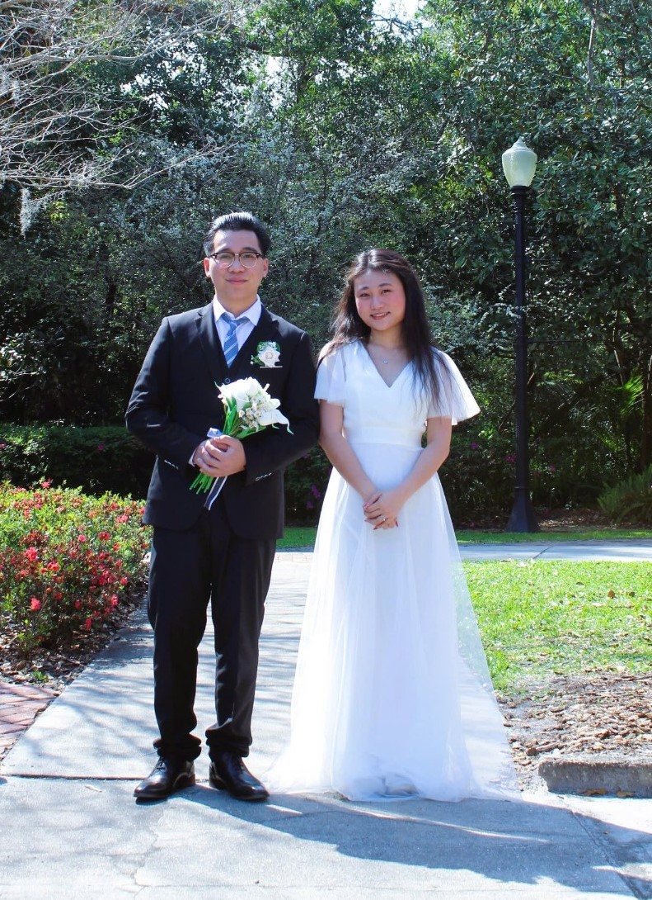

Come celebrate with us, where family, tradition, and new memories meet.
Please RSVP ♡We are bringing our wedding celebration home to Vietnam, and we'd be honored to have you join us. Because of the time difference and long journey from the US, we recommend arriving a couple of days before the first ceremony on April 24.
Two places, one celebration — and one beautiful trip we hope you will remember for years to come.
Two special days rooted in family, tradition, and the people we love.
Vietnam tips, local recommendations, and ideas for making the most of your trip.
Your invitation will include both the Vietnamese traditions and the celebration that follows, with simple guidance so our US friends know what to expect.
Our first wedding ceremony will be held in the bride’s hometown. Lễ Vu Quy is a meaningful moment when the groom and his family are officially introduced to the bride’s family. It is also a heartfelt farewell as the bride prepares to leave her family and begin a new chapter with her husband and his family.
This intimate ceremony is especially for our two families and closest friends.
Our second wedding ceremony marks the formal celebration of our marriage. Lễ Tân Hôn is a meaningful moment when the bride is officially introduced to the groom’s family and ancestors. It is also a warm welcome for the bride as she begins a new chapter and becomes part of her husband’s family.
This celebration brings together both families, our friends, and the groom’s parents’ closest friends to share in this special moment with us.
No formal dress code. Semi-formal or semi-casual attire is perfect.
We hope you'll have time to experience Vietnam beyond the wedding. Here's the framework for our April 24–May 1 celebration week.
Flights from Orlando to Vietnam typically involve two layovers, multiple time zones, and approximately 25–30 hours of travel time—and it may take even longer if there are delays.
Your first layover will usually be in a U.S. city, such as New York, Los Angeles, San Francisco, or Chicago. Your second layover will typically be in an Asian hub, depending on the airline you book, with common options including South Korea, Japan, Taiwan, or Hong Kong.
Vietnam is 11 hours ahead of Orlando from March through November, so the time difference can take some time to adjust to.
If you are joining us for Lễ Vu Quy on April 24, we recommend arriving a couple of days before April 24 so you have time to rest, adjust to the time difference, and explore a little of Ho Chi Minh City before the ceremony.
May 1 will be our main ceremony, Lễ Tân Hôn, so if you are joining us for May 1, we recommend arriving a couple of days before May 1 for the same reason.
If you would like to attend both ceremonies, you are more than welcome to come earlier and join us for both! ❤️
Most importantly, we truly cannot put into words how much it means to us that you are willing to travel so far to celebrate our wedding with us. Having you there for this special chapter of our lives means more than you know. ❤️
Our first wedding ceremony.
Between our two wedding ceremonies, take some time to experience the vibrant energy of Ho Chi Minh City! From busy streets filled with motorcycles and colorful markets to cozy cafés, delicious street food, local drinks, shopping, massages, and beautiful places to explore, there is always something happening around the city.
We hope you’ll step outside the usual tourist spots and experience Vietnam the way we love it—through its food, people, neighborhoods, and everyday moments. Try something new, wander through the streets, grab a drink at a local shop, enjoy a bowl of phở or a bánh mì, and simply take in the energy of the city.
April 25–29 is your time to relax, explore, eat, shop, and have fun! 🇻🇳❤️ We’ll also share some of our favorite places and recommendations to help you make the most of your time in Ho Chi Minh City.
An Giang is the groom’s hometown, and his home is in a peaceful rural village surrounded by rivers and rice fields. It’s a very different side of Vietnam from the busy streets of Ho Chi Minh City—and we’re so excited for you to experience it with us!
To get there, taking a sleeper bus is the best option. It’s comfortable for the long journey and extremely affordable, usually around $9–$11. You can take the sleeper bus from Bến Xe Miền Tây in Ho Chi Minh City to Bến Xe Rạch Giá through FUTA Bus (Xe Phương Trang).
↗ FUTA Bus (Xe Phương Trang)
↗ Bến Xe Miền Tây — 395 Đ. Kinh Dương Vương, An Lạc, Hồ Chí Minh 700000
↗ Bến Xe Rạch Giá
For accommodation, you can use Airbnb to find a condo in Rạch Giá. We recommend staying in Rạch Giá since there are no hotel accommodations in the village.
On the wedding day, there will be several transportation options to take you from Rạch Giá to the village for our Lễ Tân Hôn celebration. We’ll help make sure you know how to get there and get settled.
We can promise you that this will be one of the most thrilling adventures of your Vietnam trip! ❤️ You’ll be visiting a place that doesn’t often see international travelers, and the local community will be so excited to welcome our friends from the U.S. We hope you’ll embrace the experience, enjoy the countryside, and make some unforgettable memories with us. 🇻🇳
Our second wedding ceremony and final wedding celebration.
We would love to invite you to spend a day with us in our village! 🌾❤️
We can visit our family’s rice fields and then head to a local ecotourism area, where you can experience and enjoy different farming activities and see a more peaceful, authentic side of Vietnam.
Besides spending time with us, there are also many places you can visit and things you can experience while you’re in the area. We’ve put together a list of recommendations on this website to help you explore.
We hope you all have an amazing time, enjoy every moment, and make some of your best memories in the Vietnamese countryside! 🇻🇳❤️
MCO → SGN
Ho Chi Minh City’s airport can be very crowded, so we recommend booking a flight that arrives in the evening or late at night rather than in the morning.
We would prefer Airbnb over Marriott hotels. Even with the discount, Marriott can be a little pricey, and Airbnb can be a more comfortable and flexible option.
We recommend using Grab for transportation. You can also use Xanh SM or Vinasun Taxi. Vietnam has lots of motorcycles, so consider trying a GrabBike for the full experience!
Bring your passport, check your visa requirements, and consider getting an eSIM.
🛂 Vietnam E-Visa
For your Vietnam e-Visa, use the official government website:
↗ Official Vietnam E-Visa Website
💵 Currency Exchange
Don’t exchange money at the airport. We recommend exchanging your money at:
109 Hồ Tùng Mậu, Sài Gòn, Hồ Chí Minh, Vietnam
↗ Open in Google Maps
Don’t feel like you need to eat at fancy or luxury restaurants. Try the local favorites: street food, boba, phở, bánh mì, and all the little food spots you find along the way!
Thank you — Cảm ơn
Greetings — Hello or Xin chào
Chú — a man much older than you
Cô — a woman much older than you
Bà — grandma age
Ông — grandpa age
Em — someone younger than you
Anh — a man older than you, around your brother’s age
Chị — a woman older than you, around your sister’s age
Con — a little kid
A few simple words like these can make conversations feel warmer and more natural. ❤️
If this is your first time in Ho Chi Minh City, don’t feel like you need to see everything. We’d rather you slow down, eat well, wander, and enjoy the little everyday moments that make Saigon special.
These streets in District 3 are great for shoes, clothes, accessories, snacks, and everyday local shopping. Walk around, browse the little shops, and stop whenever something catches your eye.
Head spas are everywhere in Vietnam, so you can try different places. But this is our favorite spot! For under $50, our favorite combo includes 1 hour of body massage, 1 hour of head spa, sauna, plus complimentary dessert and herbal drinks.
Local drink shops are everywhere in Vietnam — not just in one neighborhood. Look for tiny sidewalk spots and try whatever catches your eye: sugarcane juice, coconut juice, Vietnamese iced coffee, fruit tea, milk tea, or a seasonal drink.
Our tip: Grab a tiny plastic chair, order something cold, and just enjoy watching the city go by.
Markets are one of our favorite ways to see everyday life in Saigon. You don’t have to visit all of them — pick one or two depending on what you want to see.
For less than $25, you can enjoy an all-you-can-eat buffet with fresh crab, shrimp, eggrolls, desserts, and lots more. Great if you want to try a little bit of everything!
One of our favorite places to experience the energy of Saigon. Come around sunset, walk the pedestrian street, watch the city light up, and grab a drink or snack along the way.
A memorable half-day trip outside the city. Walk through part of the tunnel network, learn about the history, and experience a very different side of Vietnam.
Once you reach Rạch Giá and the countryside around our village, we hope you’ll slow down, relax, eat well, and experience some of the places we love.
Another great place to experience a head spa, full-body massage, and other spa services in Rạch Giá, An Giang.
Because Rạch Giá is a smaller city, prices are generally more affordable, ranging from around $15–$50 depending on the service. Their premium massage package can be up to 3 hours and includes a full-body massage, foot massage, ear wax removal, and head spa.
It’s a great opportunity to relax and enjoy a traditional Vietnamese spa experience without spending a lot. ❤️
One of the signature dishes here is Goat Hot Pot. If your dietary preferences allow, you should definitely give it a try!
Goat Hot Pot is a popular and nourishing Vietnamese soup dish featuring tender pieces of goat meat simmered in a deeply fragrant, herbal broth. It is served with fermented bean curd paste, fresh vegetables, noodles, and tofu.
It’s a unique local experience and a great dish to try while you’re in An Giang!
This is Evan’s favorite coffee spot since high school! ☕️
After a long day of exploring the city, this could be a perfect little getaway from the heat. Air conditioning can feel like a luxury in Vietnam, so take a break, cool down, and enjoy some local drinks while relaxing like a local.
Rạch Giá doesn’t have as much to offer for sightseeing, but Phú Quốc Island does!
Phú Quốc is about a two-hour journey from Rạch Giá, and you can get there by high-speed ferry for around $12. Once you’re in Phú Quốc, we highly recommend staying at JW Marriott Phu Quoc Emerald Bay Resort & Spa if you’re looking for a special place to stay.
From Phú Quốc, you can also fly directly back to Ho Chi Minh City in about 1 hour, making it a convenient final destination before your flight back to the U.S.
So, if you have a little extra time, Phú Quốc could be a beautiful way to end your Vietnam adventure!
We might miss some amazing places, but if there is somewhere you would like to visit or something you would like to try, please feel free to ask us. We are more than happy to help and would love to have you there, enjoying our country with us. 🇻🇳❤️
Please let us know if you will be joining us in Vietnam. We would love to celebrate these special days with you!
Please RSVPOne of the best ways to experience Vietnam is through food! 🇻🇳❤️ Try a little bit of everything—from street food and local specialties to Vietnamese coffee, desserts, and all the little snacks you find along the way. Don't be afraid to try something new!